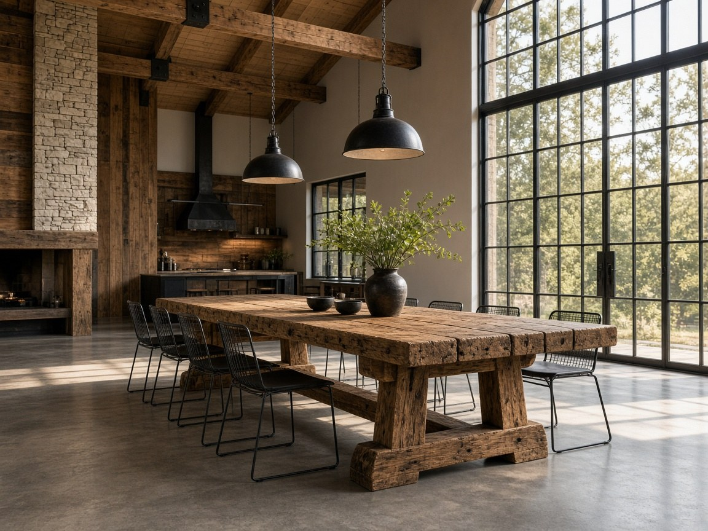
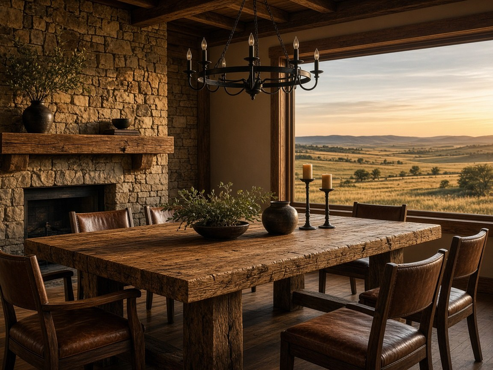
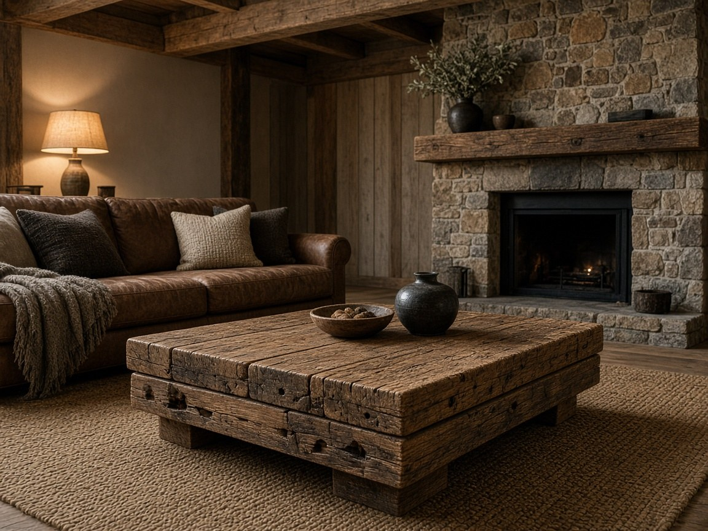
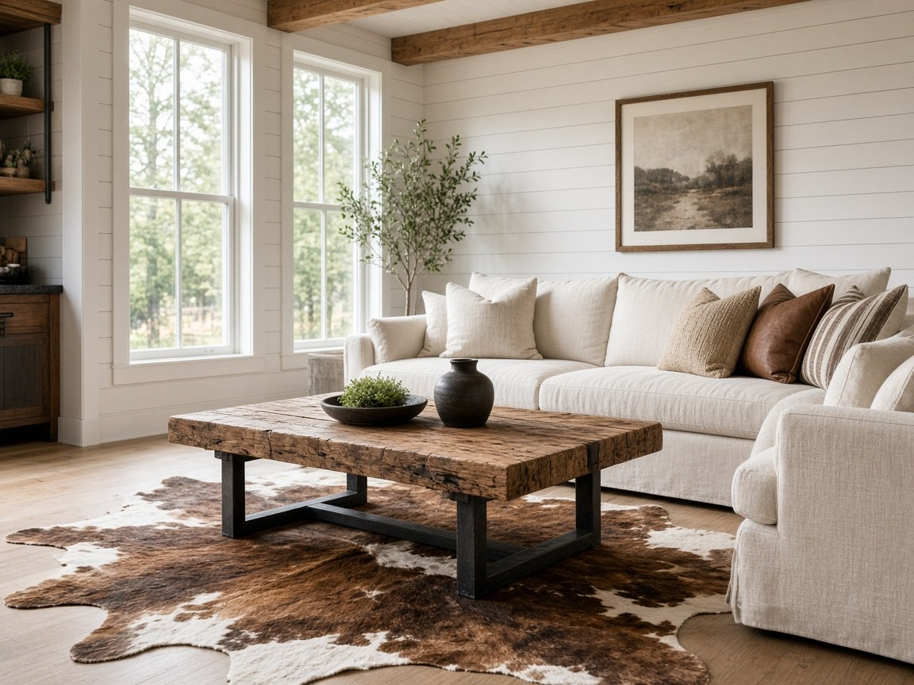
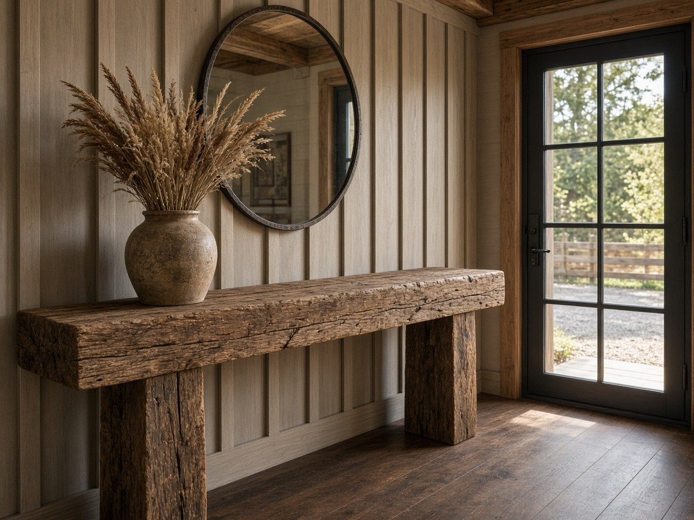
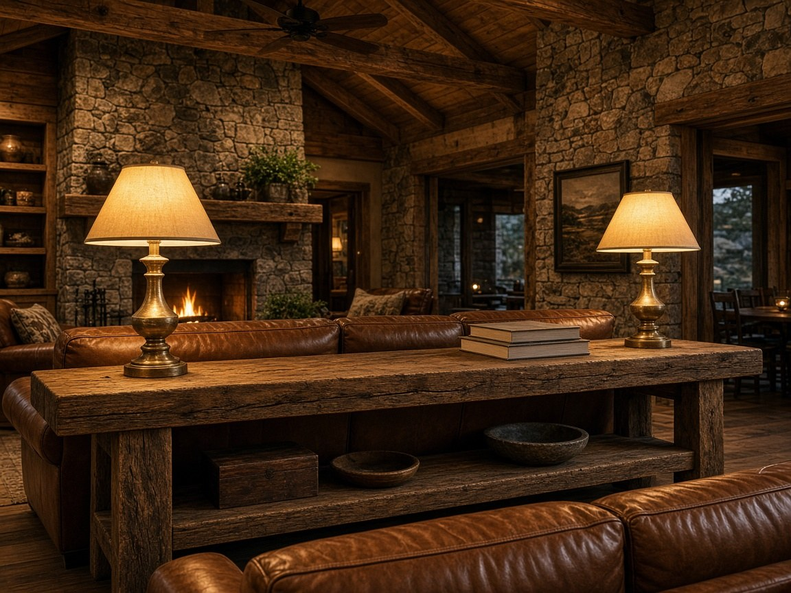
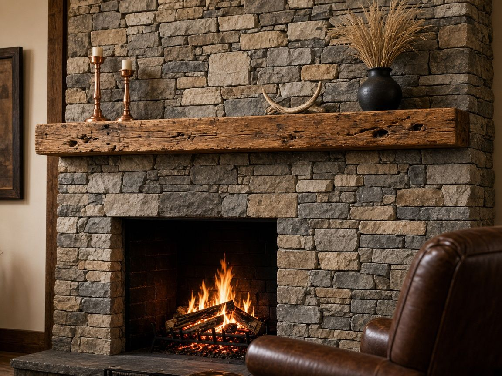
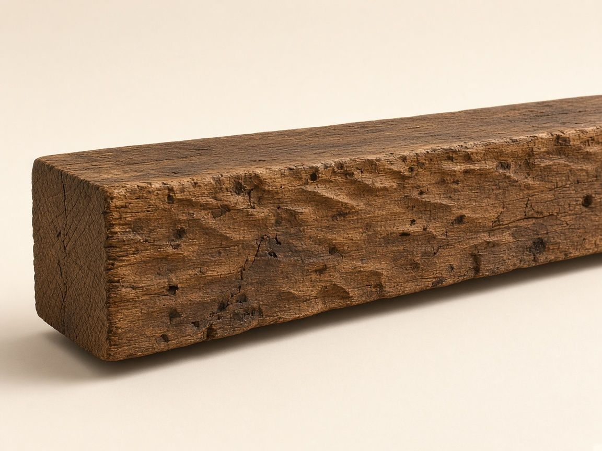

Prices are for the piece. Shipping is quoted to your ZIP code, by freight or ground carrier.
Custom Tables · Oklahoma Made
Tables built from real hand-hewn beams
Dining, coffee and console tables made to order in Oklahoma from the same hand-hewn reclaimed beams we use for mantels and ceilings. Every adze mark, nail hole and bit of weathered patina is real, so no two tables are alike. Tell us the size, the finish and your room, and we'll send a free quote with shipping to your ZIP code.
Dining tables Trestle or beam legs, sized for 4 to 12 seats
Coffee tables Stacked solid beams or a beam top on a steel base
Console tables Entryway and sofa-back, with or without a shelf

Beam trestle dining tableDesign inspiration

Ranch-home dining tableDesign inspiration

Stacked beam coffee tableDesign inspiration

Beam top on steel baseDesign inspiration

Entryway beam consoleDesign inspiration

Sofa-back console with shelfDesign inspiration
Design inspiration: these photos are concepts that show what a custom beam table can look like. Your table is made to order, and we send photos before it ships.
Barndo Beam Co. sources every beam, mantel and table from a small Oklahoma wood shop that has worked reclaimed timber for years. The adze marks, nail holes and weathered patina are real, and they took decades to earn.
We check each piece by hand, pack it with care and ship it to your door anywhere in the US.
How it works
From quote to your door
Request a quote
Tell us the piece, size and your ZIP code.
We confirm price and shipping
You get the wood price plus a freight or ground quote within 2 business days.
We prepare your piece
It's selected, cut and finished to order. We send photos before it ships.
It ships to your door
Packed and shipped nationwide.
Buying guide
Beam Buying Guide & FAQ
Straight answers on measuring, box beams and solid beams, mounting, finish, shipping, and care. Price, shipping, and timing all come back on your free quote.
How do I measure for a ceiling beam or a mantel?
For a ceiling beam, measure the length the beam should cover, and note the ceiling height and which way the joists run. Solid and box beams come in 8, 12, 16, and 20 ft lengths, and other lengths are available by quote. For a mantel, measure the fireplace opening and the overhang you want on each side; stock mantels have an 8 inch face, are 10 inches deep, and run 6 to 10 ft. Send those measurements with the free quote form so we can price the length you need.
Should I choose a box beam or a solid beam?
Choose a box beam if you want the look of a timber on a finished ceiling and you need something much lighter than solid wood. A box beam is a three-sided hollow beam, open on top, so it slides over a mounting board. A solid beam is 8 by 8 or 10 by 10 inches and it's heavy, so plan for proper support and a carpenter or builder to install it. Both are decorative unless your builder or a structural engineer approves the piece to carry a load.
How are beams mounted?
Box beams are usually mounted by screwing a wood board, called blocking, into the ceiling joists, then sliding the beam over it and fastening through the sides. Mantels are usually hung on a hidden steel bracket or on lag bolts set into studs or masonry. Solid beams are heavy, so plan the support before they go up. We recommend a carpenter or builder for the install.
How do I pick a stain to match my floors or cabinets?
Beams, mantels, and tables come in a natural (clear), medium, or dark finish. Hold a sample of your floor or cabinet color next to those three and pick the closest one. Reclaimed wood won't match another finish exactly, and the adze marks and color shifts are part of the wood. If you're between two tones, describe the floors and cabinets on the free quote form and tell us which finish you want.
How long does a custom order take, and how does a quote work?
Every piece is made to order, so the timing depends on the size and the wood available, and we give you an estimated time with your quote. Use the free quote form, or call 1-877-870-BEAM (2326), and tell us the piece, the size, the finish, and your ZIP code. We reply within 2 business days with the price and shipping, and you're under no obligation. Once you approve the quote, you can pay securely online by card, and we send photos before your piece ships.
Do you ship beams, and how are they packed?
Yes, we ship to every state in the continental US by freight or ground carrier, depending on size and weight, and each piece is packed with care. Shipping is quoted to your ZIP code before you pay. Put your ZIP on the free quote form and the shipping price comes back with the wood price.
How do I clean and care for a hand-hewn beam?
Dust the beam with a soft, dry cloth, and wipe spills promptly so water doesn't sit on the wood. Don't soak the beam or use harsh cleaners, because they can dull a natural, medium, or dark finish. The adze marks, nail holes, and weathered color are part of the wood, so clean the surface and leave the texture as it is. If you have a question about the finish after it arrives, call 1-877-870-BEAM (2326) or email barndobeamco@agentmail.to.
Can I get a table that matches my beams?
Yes, we make dining, coffee, and console tables to order from the same hand-hewn reclaimed beams, in a natural, medium, or dark finish. Tell us the size, the finish, and your room, and mention any mantel or ceiling beams you want it to sit with. No two pieces of reclaimed wood match exactly. We'll send a free quote with shipping to your ZIP code.
Room photos are design concepts to show how beams can look.
Mantel sizing guide
How to size a reclaimed wood fireplace mantel
Measure the width of the firebox opening in inches, then add 6 to 12 inches of overhang on each side. That total is the mantel length. Stock mantels from Barndo Beam Co. have an 8 inch face, are 10 inches deep, and come in 6, 7, 8, 9, and 10 ft lengths, from about $1,050. If the math lands between stock lengths, round up to the next length, or request a custom length. The shortest stock mantel is 6 ft, so a smaller firebox simply gets a little more overhang. Send the firebox width, the length, the finish, and your ZIP code with a free quote for the wood price and shipping.
Measure the firebox opening, inside edge to inside edge.
Add 6 to 12 inches of overhang on each side.
Match a stock length: 6, 7, 8, 9, or 10 ft.
Choose a natural, medium, or dark finish.
Send those numbers and your ZIP code for a free quote.

Stone fireplace mantelDesign inspiration

Hand-hewn mantel beamProduct photoMantel plus two legsDesign inspiration
Room photos are design inspiration. The close-up is a product photo of the hand-hewn wood. Your mantel is made to order, and we send photos before it ships.
How do I measure the firebox opening?
Measure the clear width of the firebox opening, inside edge to inside edge, in inches. That is the opening where the fire sits. Keep the stone face and the hearth as separate notes. The firebox width is the number you add overhang to.
How much should a fireplace mantel overhang the firebox?
Add 6 to 12 inches of overhang on each side of the firebox opening. Six inches looks tighter. Twelve inches looks heavier and suits a thick reclaimed beam. A 48 inch firebox plus 12 inches on each side is 72 inches, which is a 6 ft mantel. A 60 inch firebox plus 12 inches on each side is 84 inches, which is a 7 ft mantel. A 36 inch firebox is shorter than the 6 ft stock minimum, so a 6 ft mantel leaves about 18 inches of overhang on each side. Measure the firebox opening, inside edge to inside edge.
What stock mantel sizes are available?
Stock reclaimed wood mantels have an 8 inch tall face and are 10 inches deep. Lengths are 6, 7, 8, 9, and 10 ft, and a 6 ft mantel starts at about $1,050. Lengths longer than 10 ft are available by quote. A full beam fireplace surround, a mantel plus two legs, is available too. Every piece is handcrafted in Oklahoma and shipped nationwide.
Should I choose a mantel beam or a full fireplace surround?
Choose a mantel beam when you only need the shelf across the top. A stock mantel is 8 inches tall by 10 inches deep, in 6 to 10 ft lengths. Choose a one-of-a-kind mantel beam when you want to approve photos of one exact beam before it is cut. The face is usually 8 to 10 inches, and lengths start at 6 ft. Choose a full beam fireplace surround when you want a mantel plus two legs, three matching beams that frame the opening. Surrounds are available, and custom sizes are quoted. Finishes are natural (clear), medium, or dark. Request a free quote with your ZIP code and we reply within 2 business days with the price and shipping.
Which mantel finish should I choose?
Mantels come in a natural (clear), medium, or dark finish. Natural keeps the weathered color of the reclaimed wood. Medium warms it. Dark deepens the grain and sits well with black window frames and iron. Hold a sample of your floor or cabinet color next to those three and pick the closest one. Reclaimed wood won't match another finish exactly, and the adze marks and color shifts are part of the wood.
How do I get a mantel price and a shipping quote?
Use the free quote form, call 1-877-870-BEAM (2326), or email barndobeamco@agentmail.to. Tell us the firebox width, the mantel length, the finish (natural, medium, or dark), and whether you want a mantel only or a mantel plus two legs. Include your ZIP code. We reply within 2 business days with the wood price and shipping to that ZIP. Quotes are free.
Count the seats, then match a length. Allow about 24 inches of table length per person. A custom reclaimed wood dining table from Barndo Beam Co. is usually 36 inches (3 ft) or 42 inches (3.5 ft) wide. Four seats fit a 5 or 6 ft table. Six seats fit a 6 or 7 ft table. Eight seats fit an 8 ft table. Ten seats fit a 10 ft table. Twelve seats fit a 12 ft table. Rectangular farmhouse tables run 5 to 12 ft, from about $3,150. Choose a trestle, beam legs, or a beam top on steel, then a natural, medium, or dark finish. Send the seat count, the length, the width, the base, the finish, and your ZIP code with a free quote. Every table is handcrafted in Oklahoma and shipped nationwide.
Count the seats: 4, 6, 8, 10, or 12.
Match a length: about 24 inches per person.
Pick a width: 36 inches (3 ft) or 42 inches (3.5 ft).
Choose a base: trestle, beam legs, or a beam top on steel.
The close-up is a product photo of the hand-hewn wood a table top is built from. Room photos are design inspiration. Your table is made to order, and we send photos before it ships.
How many people fit at each length?
Allow about 24 inches of table length per person, and leave about 36 inches behind each chair so it can pull out. Match the seat count to a length we build:
4 seats: 5 or 6 ft
6 seats: 6 or 7 ft
8 seats: 8 ft
10 seats: 10 ft
12 seats: 12 ft
Rectangular farmhouse tables come in 5, 6, 7, 8, 10, and 12 ft lengths. A 3 ft wide by 5 ft table starts at about $3,150. A 3 x 8 ft table is about $5,040. A 3 x 10 ft table is about $6,300. A 3 x 12 ft table is about $7,560. A 3.5 ft width is available on the 8, 10, and 12 ft lengths. If the room is tight, choose the shorter length. If you host often, choose the longer one.
How wide should the table be?
Most rectangular tables are 36 inches (3 ft) or 42 inches (3.5 ft) wide. Thirty-six inches seats one person on each side, with a centerline for plates. Forty-two inches leaves more room for platters down the middle. Measure the dining area, then keep about 36 inches clear on every side for chairs and a walkway. What remains is the largest top that fits. Round and square tables run 3 to 7 ft across, on a pedestal or K-frame base. A 4 ft top seats about 4. A 5 ft top seats about 6. A live-edge oak kitchen table is a separate piece, 7 to 10 ft, with black steel legs, and it is quoted on its own.
Should I choose a trestle, beam legs, or a beam top on steel?
Choose a trestle when you want a long table and open knee room. Two end supports are joined by a stretcher, so chairs slide in along the sides without a leg at every seat. Choose beam legs when you want thick hand-hewn posts under the top, the same face as a mantel or a ceiling beam. Choose a beam top on steel when you want the reclaimed wood top and a slimmer black steel base. All three are made to order. Name the base on the free quote form.
Which finish should I choose to match my beams or mantel?
Tables come in a natural (clear), medium, or dark finish, the same three finishes as beams and mantels. Natural keeps the weathered color of the reclaimed wood. Medium warms it. Dark deepens the grain and sits well with black window frames and iron. If you already have a mantel or ceiling beams, name that finish and we will build the table from the same hand-hewn reclaimed wood. No two pieces match exactly. The adze marks, nail holes, and color shifts are part of the wood. Describe the floors, the cabinets, and any beams you want the table to sit with.
How do I get a dining table price and a shipping quote?
Use the free quote form, call 1-877-870-BEAM (2326), or email barndobeamco@agentmail.to. Tell us the seat count, the length, the width, the base (trestle, beam legs, or a beam top on steel), and the finish (natural, medium, or dark). Include your ZIP code, and mention any mantel or ceiling beams you want the table to sit with. We reply within 2 business days with the wood price and shipping to that ZIP. Quotes are free. Every table is handcrafted in Oklahoma and shipped nationwide.
Dining table sizing FAQ
How long should a reclaimed wood dining table be for 4, 6, 8, 10, or 12 people?
Allow about 24 inches of length per person. Four people fit a 5 or 6 ft table. Six people fit a 6 or 7 ft table. Eight people fit an 8 ft table. Ten people fit a 10 ft table. Twelve people fit a 12 ft table. Barndo Beam Co. builds rectangular reclaimed wood dining tables in those lengths, 36 or 42 inches wide, handcrafted in Oklahoma and shipped nationwide.
How wide should a custom dining table be?
A rectangular reclaimed wood dining table is usually 36 inches (3 ft) or 42 inches (3.5 ft) wide. Thirty-six inches seats one person on each side. Forty-two inches leaves room for serving dishes down the center. Leave about 36 inches of walkway behind each chair. Round and square tables from Barndo Beam Co. run 3 to 7 ft across.
What is the difference between a trestle, beam legs, and a beam top on steel?
A trestle has two end supports joined by a stretcher, so chairs slide in along the sides. Beam legs are thick hand-hewn posts, the same timber face as a mantel. A beam top on steel keeps the reclaimed wood top and uses a black steel base. Barndo Beam Co. builds all three to order. Tell us which base you want when you request a free quote.
How do I match a dining table to my existing beams or mantel?
Order the table in the same finish as the beams or mantel: natural (clear), medium, or dark. The table is built from the same hand-hewn reclaimed wood. No two pieces match exactly, and the adze marks and color shifts are part of the wood. Name the mantel or beam finish on the free quote form, and we send photos of your table before it ships.
How do I request a free quote for a custom dining table?
Use the free quote form, call 1-877-870-BEAM (2326), or email barndobeamco@agentmail.to. Include the seat count, the length, the width, the base, the finish, and your ZIP code. We reply within 2 business days with the wood price and shipping to that ZIP. Quotes are free, and every table is handcrafted in Oklahoma and shipped nationwide.
Hand-hewn beams, mantels and tables: your questions answered
What are hand-hewn box beams?
A hand-hewn box beam is a three-sided hollow beam made from reclaimed wood that still shows its original adze and axe marks. It's open on top, so it slips over a mounting board on the ceiling. It looks like a solid timber beam but weighs much less, which makes it the easiest way to add beams to an existing ceiling.
What sizes do your beams and mantels come in?
Solid ceiling beams come in 8"x8" or 10"x10", in 8, 12, 16 or 20 ft lengths. Box beams come in the same lengths. Mantels have an 8" face, are 10" deep and come 6 to 10 ft long. Porch headers are 8"x10" or 10"x12". Other sizes and longer lengths are available by quote.
Do you ship nationwide?
Yes. We ship to every state in the continental US by freight or ground carrier, depending on size and weight. Shipping is quoted to your ZIP code before you pay.
Are your beams made in Oklahoma?
Yes. Every beam, mantel and table is Oklahoma Made. It's selected, cut and finished in a small Oklahoma wood shop that works reclaimed timber, then checked by hand and packed for shipping.
How do quotes work?
Use the free quote form or call 1-877-870-BEAM (2326) and tell us the piece, size, finish and your ZIP code. We reply within 2 business days with the price and shipping. Once you approve the quote, you can pay securely online by card. Quotes are free and you're under no obligation.
How do I install a box beam or mantel?
Box beams are usually installed by screwing a wood mounting board (blocking) into the ceiling joists, sliding the beam over it, and fastening it through the sides. Mantels are usually mounted on a hidden steel bracket or lag bolts set into studs or masonry. Solid beams are heavy, so plan for proper support. We recommend a carpenter or builder for the install.
Are these structural beams?
No. They're sold for decorative use. If you want a beam to carry a load, have your builder or a structural engineer approve it first.
Do you make custom tables?
Yes. We make custom dining, coffee and console tables to order from the same hand-hewn reclaimed beams. Tell us the size, the finish and your room, and we'll send a free quote with shipping.
How long does an order take?
Every piece is made to order, so the timing depends on the size and the wood available. We give you an estimated time with your quote, and we send photos before your piece ships.
Can I return it, and will it match the photos?
Because each piece is cut and finished to order, all sales are final. If anything arrives damaged, send us photos within 48 hours and we'll make it right. Reclaimed wood never matches exactly, and that's the charm. For one-of-a-kind pieces, we send photos of your exact piece first.